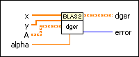
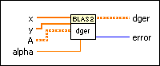

dger - General Matrix Rank-1 Update (DBL) VI
Owning Palette: Basic Linear Algebra Subroutines VIs
Requires: Full Development System
Calculates the rank–1 update of a general matrix.

 Add to the block diagram Add to the block diagram |
 Find on the palette Find on the palette |
Owning Palette: Basic Linear Algebra Subroutines VIs
Requires: Full Development System
Calculates the rank–1 update of a general matrix.

| Add to the block diagram |
Find on the palette |
 |
x is an M–element real vector. |
|
y is an N–element real vector. |
 |
A is a real general matrix of dimensions greater than or equal to M × N. The default is an M × N matrix with all elements equal to 0. |
 |
alpha is a real scalar that scales x*y^T, where y^T is the same as y transposed. The default is 1. |
 |
dger is a real matrix of the same dimensions as A. For the elements of the first M rows and N columns of dger, the VI returns the results of the calculation. For any remaining elements, the VI returns the value of the element with the same index in A. |
 |
error returns any error or warning from the VI. You can wire error to the Error Cluster From Error Code VI to convert the error code or warning into an error cluster. |
Refer to the BLAS (Basic Linear Algebra Subprograms) website at netlib.org for more information on BLAS functions.